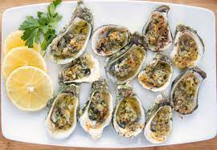

Garlic Oysters

Ingredients
- 12 Oysters
- 2 tbsp garlic
- 4 ounces butter
- 1 tsp Italian Parsley
- 1/4 tsp granulated onion
- 1/8 tsp black pepper
- 1 tbsp Romano cheese
Instructions
- Simmer butter and garlic over low heat for 7-10minutes
- Remove from heat and add all seasonings except cheese
- Place garlic butter into small bowl and refrigerate
- Clean oysters under running cold water
- Place opened oysters on a cutting board or baking sheet
- Spoon a small amount of garlic butter over each oyster
- Place Oysters in preheated 400-degree oven for 15-20 minutes
- Serve and enjoy!